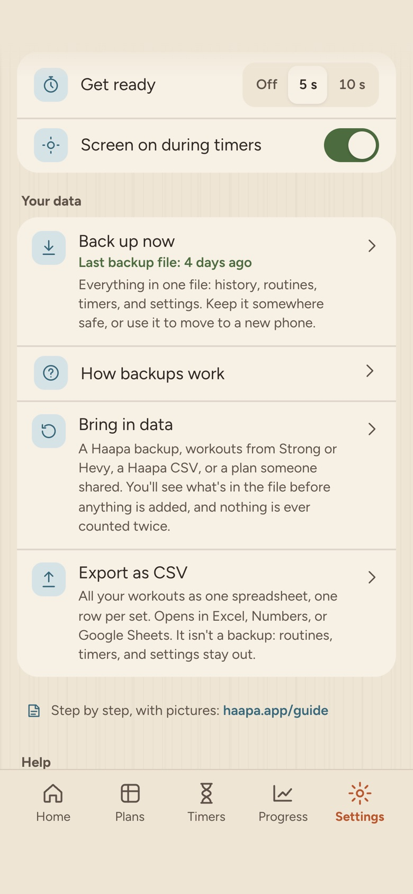
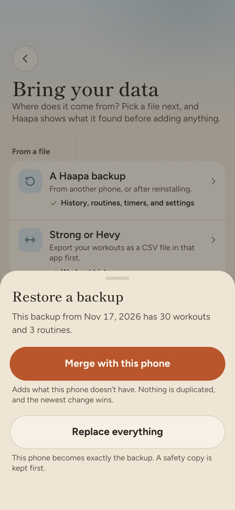
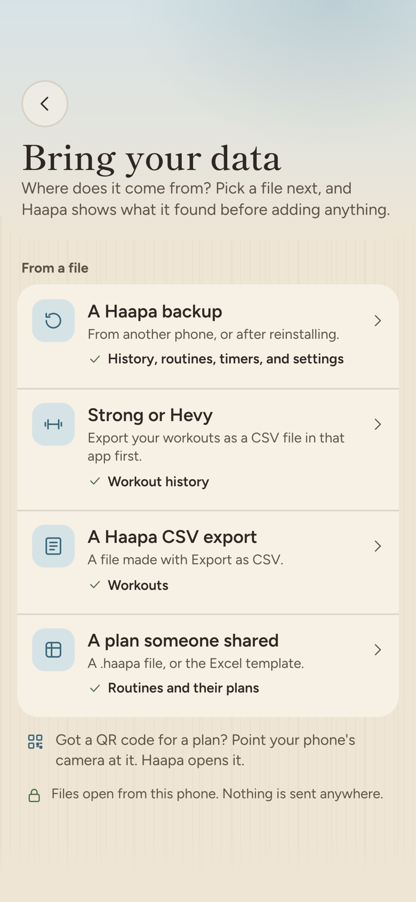
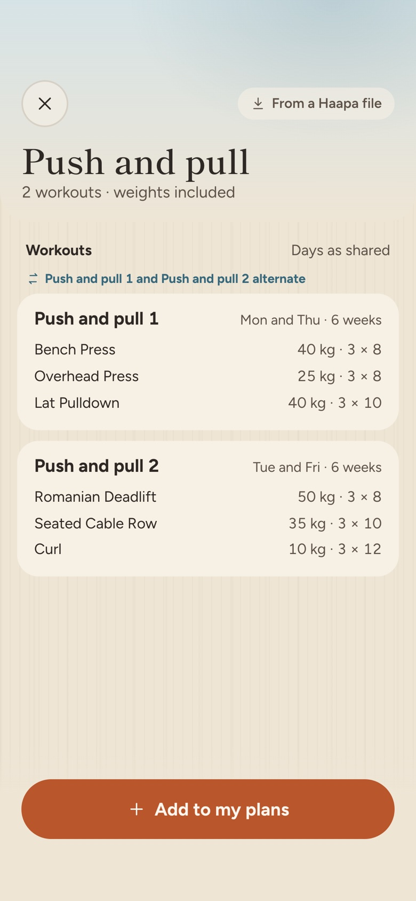

1 · Automatic
Turn on your phone's backup
Your phone can back up Haapa by itself, along with your other apps. If you get a new phone and set it up from that backup, your workouts come back. Check once that it's on.
- Android: open the phone's Settings › Google › Backup, and make sure backup is on, including app data. The names can differ a little from phone to phone.
- iPhone: open Settings › your name › iCloud › iCloud Backup. If your iCloud space is too small for a whole phone, back up to your computer instead: Finder on a Mac, or the Apple Devices app on Windows.
Haapa can't see whether your phone's backup is on, so it never says it is. A file made with Back up now (next part) is the copy you control yourself.
2 · By hand
Make a backup by hand
A backup is one file with everything: your workouts, routines, plans, timers, and settings.
- Open Settings, the last tab at the bottom.
- Under Your data, tap Back up now.
- Your phone's share menu opens. Save the file somewhere that isn't only this phone: Files or iCloud Drive on iPhone, Google Drive on Android, or send it to yourself by email.
The file is called haapa-backup- plus the date, for example haapa-backup-2026-11-21.json. Under Back up now, Settings shows when you last made one. Once a month is a good habit, and always before you change phones.

3 · Restore
Restore or move to a new phone
Use your backup file to bring everything back, on this phone or on a new one.
- Install Haapa on the new phone and open Settings.
- Tap Bring in data, then A Haapa backup, and choose your backup file.
- Haapa shows what's in the backup. Choose how to bring it in:
Merge with this phone adds what this phone doesn't have. Nothing is added twice, and the newest change wins.
Replace everything makes this phone exactly like the backup. Haapa keeps a safety copy of what's there now first.
Not sure which one? Choose Merge. It never removes anything. It's also how you combine two phones into one.

4 · Export
Export to a spreadsheet
Take your whole history to Excel, Numbers, or Google Sheets.
- In Settings, under Your data, tap Export as CSV.
- Save or send the file, called
haapa-workouts-plus the date. - Open it in your spreadsheet app. Every set is one row, with the date, the exercise, the weight, and the reps.
A CSV file is for reading and sorting your history. To keep everything, including routines, plans, and timers, make a backup. The columns are described on the CSV format page.
5 · Import
Import workouts from Strong, Hevy, or Haapa
Bring your history with you, from Strong or Hevy, or from a Haapa CSV file made on another phone.
- Coming from Strong or Hevy? First export your workouts as a CSV file in that app.
- In Haapa, open Settings and tap Bring in data.
- Pick where the file comes from: Strong or Hevy, or A Haapa CSV export. Then choose the file.
- Haapa shows how many workouts and sets it found, and which exercise names it matched. Workouts already on this phone are skipped. Tap Import to add them.
Nothing is added until you tap Import, and nothing is ever counted twice, so trying again is safe.

6 · Shared plans
Add a plan someone shared with you
A coach, a PT, or a friend can send you a whole program.
- A QR code: point your phone's camera at it. Haapa opens with the plan.
- A file (
.haapa) or the Excel template: in Settings, tap Bring in data, then A plan someone shared, and choose the file. - Check the preview, then tap Add to my plans.
The plan becomes yours. You can change any exercise, weight, or rule afterwards, and the person who shared it can't see what you do with it.
